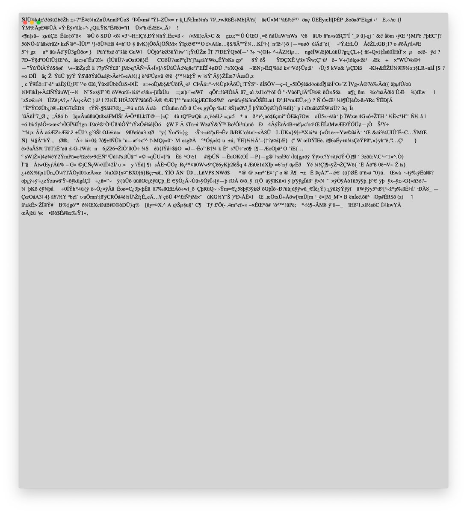

  	<div class="flex-wrap">
      
  	  <article class="tweet  " id="main">
  	    <p class="full_text">
  	      When WhatsApp said my messages were encrypted, I don't think this is what I had in mind... <div class="gallery"><ul><li><a href="../../tweets_media/1543560533487587329-FWvUFM-X0AAGL95.jpg"></a></li></ul></div>
  	    </p>
  	    <p class="created_at">
  	      7/3/2022, 4:41:23 AM
  	    </p>
  	    <p class="favorite_count">Favs: 1</p>
  	    <p class="retweet_count">Retweets: 0</p>
  	    <a class="permalink" href="../1543560533487587329">link</a>
  	  </article>

  	</div>
  </div>
